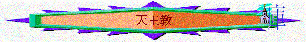

[ 認識道教ppt ] [認識佛教ppt ] [ 認識回教ppt ]
A.天主教的歷史
～基督降生在伯利恆，在三十歲傳道，三年後，釘死在十架上，但三日後復活，並在升天前，將大使命交與信徒，那時，福音在耶路撒冷點燃的一個小火花，很快爆發成一團烈燄，並迅速地傳遍了地中海岸沿岸。
～在最初三百年中，沒有分甚麼是真教會，教會那時只有是純正，愛主，熱心，共同生活的弟兄姊妹。
～但在第四世紀中，
～主曆445年，羅馬主教李奧更宣稱自己是所有基督徒的教宗(Pope：有父親意思)；而主後590年，羅馬主教格雷戈里更堅定自己教宗地位，但在東方一支教會(以君士坦丁堡為中心)的領袖們不承認；而更在主後1045年，君士坦丁堡的教區監督將羅馬教宗逐出教會，教會就開始分裂，出現西方教會(羅馬天主教)和東方教會(東正教)的各自發展情況。
～在西方教會成長期中，它開始加添某些聖經中沒有的教條，最後，主後1517年，馬丁路得帶領改革敎會運動，因見解和天主教會不同，被迫離開教會，繼續與羅馬天主教抗衡，後來更發展成為現今的基督教(也稱為更正派)。(黎登奧,1981,pp34-37)
B.天主教七聖禮
a.洗禮聖事（嬰兒洗禮）
b.堅振聖事（堅信禮）
c.聖體聖事（聖餐禮）
d.懺悔聖事（告解禮）
e.神品聖事（聖秩禮）
f.婚姻聖事（婚禮）
g.病人敷油（抹油禮）
C.天主教的現況
～全球天主教徒人數有正增長。據梵蒂岡最新出版的「2008年宗座年鑒」，至2006年全球天主教徒總數達11億3,100萬，比前年增長了1.4%。而正準備獻身做司鐸的修生人數亦有0.9%的增幅。～據該統計報告，全球天主教徒的分佈仍以美洲地區最多，佔總數的一半（49.8%）；而擁有全球61%人口的亞洲，天主教徒人數有1億1,800多萬，佔總數的10.5%。
～香港天主教徒約24萬，增長屬緩慢。司鐸關傑棠神父於一聚會上指出其主因是信徒在領洗後缺乏團體的滋養；並年輕信徒感到信仰與現實脫節，從而逐漸疏遠教會。
D.天主教與基督教的分別
～相似的地方
a.所誦讀的聖經，大致相同
b.都舉行聖洗及聖餐這兩項偉大的聖禮
c.往往誦讀相同的禱文和歌唱相同的聖詩
d.關於個人和社會行為上的許多準則，基督徒和天主教徒都共同遵守(e.g.離婚、堕胎的看法，守公民責任，關心社會等)
e.彼此都由中世紀的教會演變
f.對教會偉大的聖徒和思想家之遺訓，也共且分享(e.g.奧古斯丁)
g.某一些教義，大家在「宣稱」上也相同，e.g.「相信神是獨一的真神，耶穌基督道成肉身．．．．」(羅納斯,1956,pp2-3)
～分別的地方
a.關乎救恩
(天--天主教：基--基督教)
天：-宣稱「人無力自救」，救贖是上帝白白賜給人的禮物，而且是藉基督與信心，才能得到(Alan
Schreck pp.15-24)，但卻同時強調洗禮、彌撒、善行，順服教會與救恩有關(Alan
Schreck p.23,25,28)
-堅持善行在救贖裏的角色(Alan
Schreck p.29)，更宣稱：
「信心與行為是我們接受神白白禮物或救贖的恩典唯一方法。」(同上,p.124)
基：-救恩是個人單單相信耶穌的結果，不在乎行為(弗2:8)
-人因信稱義，不是因信加行為的(羅3:22,28,約6;29)
b.關乎聖經
天：-「．．．．聖經以及由聖神領導真理的普世教會之「口傳傳統都對教會有約束的力量。」（合一教理卷五p.5），更宣稱「信徒應該以對聖經同樣的愛與尊重的態度，對待傳統」」
-「．．．．因為新的時代帶來新的挑戰，需求新的信仰回應的形式，故此傳統就在延續不斷的過程中繼續形成（合一教理卷五「聖經的傳統」p.4-p20）」
基：-個別主教、會議、傳統不能取代聖經之權威性
-不能因遺傳廢了神的誡命(太15:3)
聖經乃一本萬應之書，有教義及生活性教導部份，足以應付各種時代帶來的挑戰(提後3:16-17)
c.關乎馬利亞
天：-在天子的子民中，具有最超越地位的，是基督之母，終身童貞的馬利亞，她是耶穌救世工程中最中誡，密切的合作者。(天主教的信仰，1970,p.158)
-我們應如同對自己母親一樣，全心依賴她，求她幫助我們時常實行天主旨意，並為我們轉求天主(天主教的信仰,1970,p.159)
-梵蒂岡第二屆大公會議的「教會憲章」，以下面的話作結束：「希望所有基督徒都向天主之母(馬利亞)．．．．傾訊迫切的禱告。」(天主教的信仰，1970,p.160)
-卒世童貞：聖母在孕育，當時和以後，都保存童貞(拉特朗大公會議，AD649)
-無染原罪(主教團,1984,p.52)
-否認以馬利亞取代敬拜主的地位，(但從實際行動，敬拜之中，對馬利亞瞻禮節期的份量，唸經次數，拜像朝聖的狂熱，實難否認其對馬利亞之敬拜，遠超救主之上)(張佳音,p.141)
基：-對馬利亞之代求，轉求，均屬徒然，更嫌褺瀆，因為馬利亞並不能干予主的工作(路2:48-49,約2:3-4)；而唯有主才是人神之間唯一的中保(來8:6,9:15；提前2:5)
-聖經並沒有「卒世童貞」的理論及說法，反而顯示馬利亞曾同約瑟同房(太1:25)，更顯示她還生其他兒女(路2:7,路2:23)
-馬利亞「無原罪」違反聖經真理，因為「世人都犯了罪」(羅3:23)，而且馬利亞更表明自己是需要救主的(路1:46-47)
-聖經沒吩咐人敬拜馬利亞，而且更無明顥或暗示馬利亞有超越的地位(太2:11；路1:46-47)
d.關乎救皇
天：-基督任命彼得為宗教徒之長，把教會之轄治權，交與之，而其繼承人是現今的羅馬天主教的教宗(第一次梵蒂岡大公會議，1869-1870訂)
-敎皇是代表基督，有絕對權威，故當絕對順服教皇(張佳音,p.139)
-1870年，第一屆梵蒂岡大會，庇護九世宣佈：教皇絕對無誤之神權。
基：-教會最重要的根基是基督(林前3:11)，人不能取代基督位置
-沒証明主吩咐將彼得之地位傳遞下去
-彼得也是人，他在信仰上也有錯誤(加2:11)，保羅也沒有絕對順服彼得的那次的行為，反而當面指責他的錯誤
-連彼得，保羅也覺自己是罪人，何況現今教宗呢！
-而從歷史中更發現教皇之言論也有錯誤；e.g.1642年UrbanⅧ，宣佈太陽環繞地球轉，地球是平的，結果把認為地球環繞太陽轉的加利略囚於猶太中(禾編輯要負會,1981,p74,p.82)
～雖然今日很多天主教已經不斷在信仰上更新，很多天主教可能都是真心相信耶穌，甚致清楚得救；但到現時為止，整體天主教的基要信仰仍未變，(即使部份天主教變了)，他們仍不肯修訂他們認為對卻不合聖經真理的信條，故天主教始終在信仰上仍與基督教有很大的分別。
參考資料：
Alan Schreck:Catholic and
Christian,Servant Books
禾編輯要負會:基督,1981
公教真理學會:合一教理卷,1982
黎登奧:殊道同歸,中國主日學協會,1981
中國天主教團教義委員會:天主教的信仰,1981
羅納斯:基督教與羅馬天主教信仰之區別,1956
主教團:天主教信仰問答,1984
張佳音:異端研究筆記,香港
http://zh.wikipedia.org/
http://gospelherald.com.hk/news/wor_1394.htm
[ 認識道教ppt ] [認識佛教ppt ] [ 認識回教ppt ]